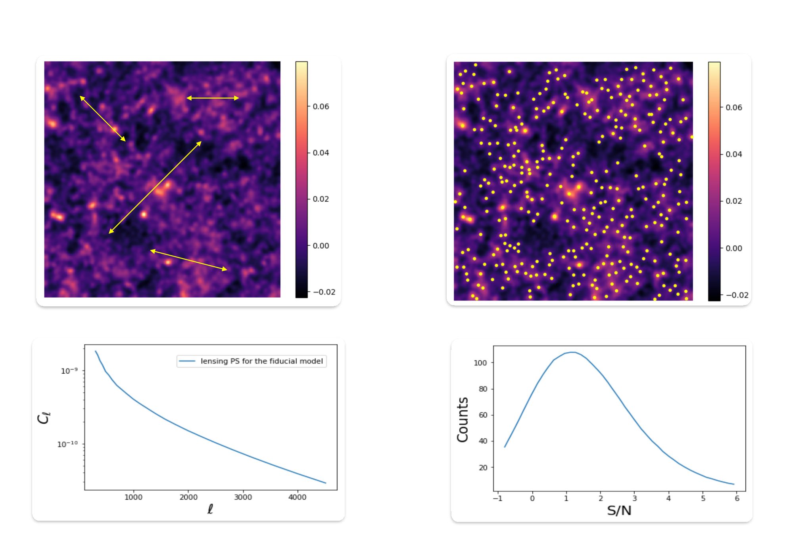
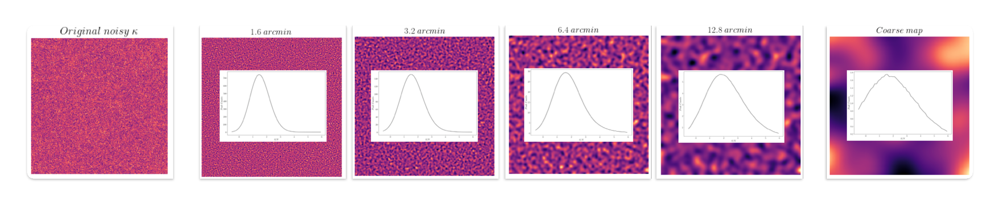
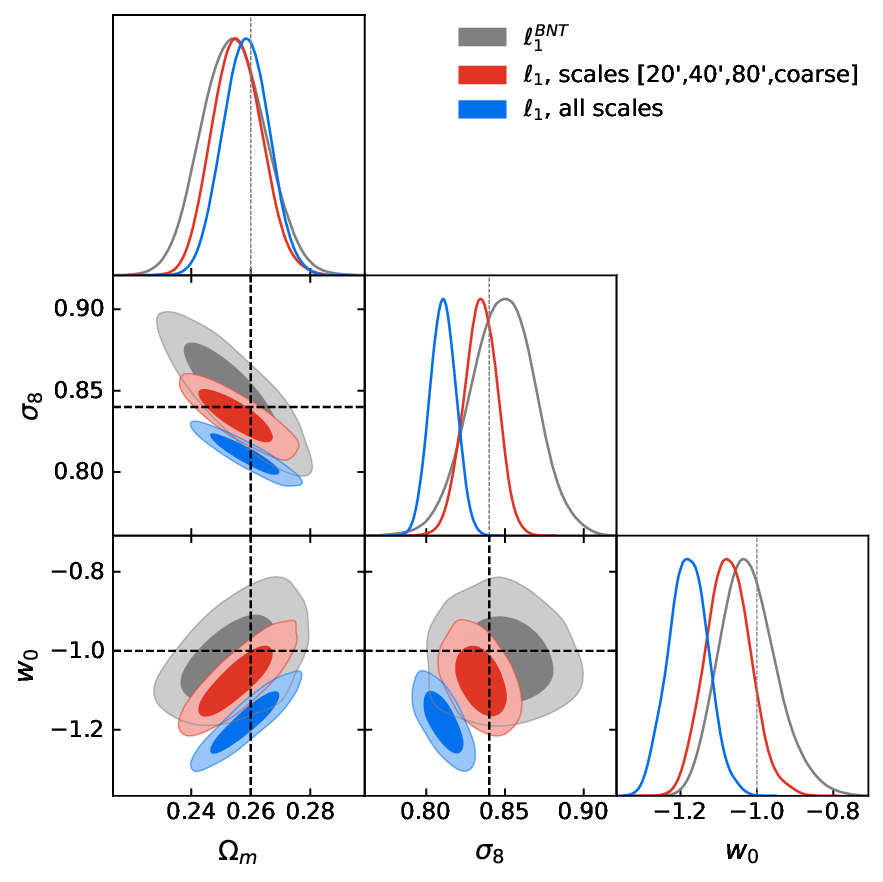
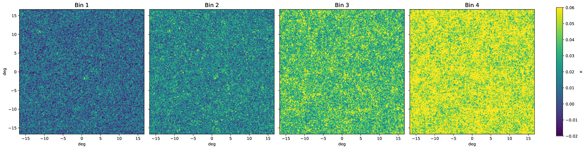
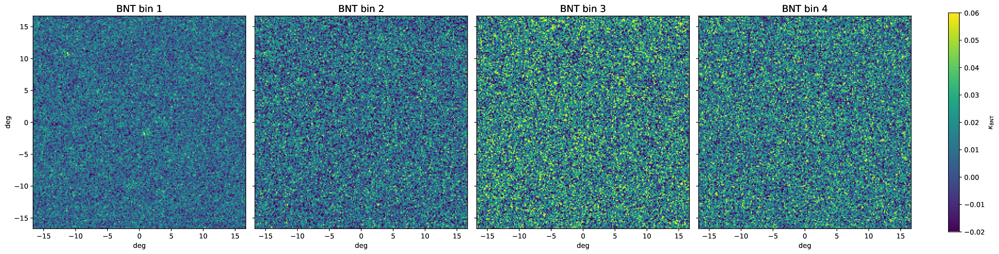
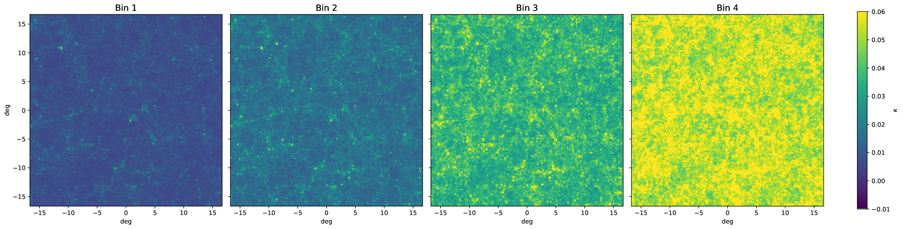
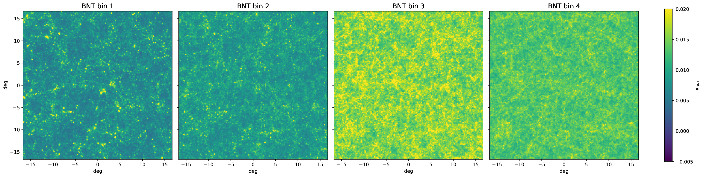
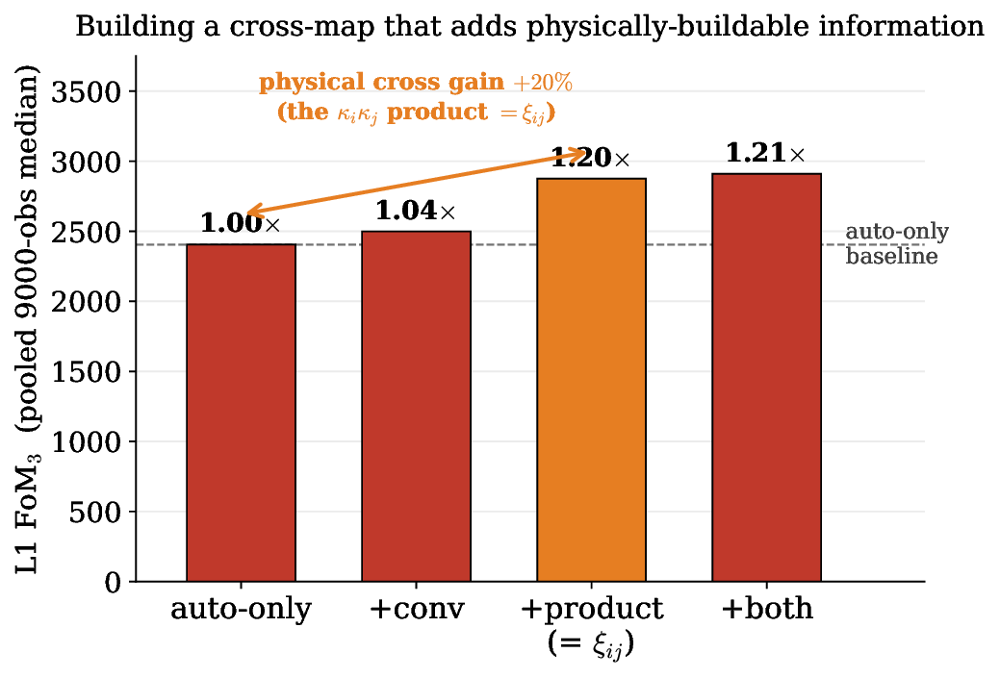

Jun 16 2026 · The Non-Gaussian Universe · FORTH, Heraklion
Can we trust higher-order weak lensing?
Baryonic robustness, and learned vs analytical summaries
Andreas Tersenov · FORTH · U. Crete · CEA Paris-Saclay · slides: andreastersenov.github.io/talks/
§0 We are all optimizing statistics; the two-point camp still does not trust the contours
🧐
the 2-point camp
"I don't believe any of your contours."
what would make HOS flagship-grade?
blinding
robust covariance
emulators
systematics
analytical cross-checks
non-Gaussian likelihood
method limits
null / validation tests
simplicity
Part 1 of 2
Do baryons break HOS?
Baryonic feedback, the wavelet ℓ1-norm, and the BNT transform.
§1 Stage IV is no longer statistics-limited, it is systematics-limited
to trust a statistic
Before we trust any summary statistic, we have to quantify how each systematic affects it, and at the contour level (the inferred parameters).
Illustris: baryonic feedback reshaping the cosmic web
the systematic at hand
Baryonic feedback (AGN, supernovae) suppresses matter on small scales, mimicking cosmological signal and biasing inference, exactly where the constraining power lives and where the feedback models disagree most.
core questions
How does unmodeled baryonic feedback bias our non-Gaussian statistics?
After safe scale cuts, do HOS still outperform the power spectrum?
§1 Higher-order statistic I: peak counts

Peaks: local maxima of the SNR field $\nu = (\mathcal{W} \ast \kappa)(\theta_{\rm ker})\,/\,\sigma_n^{\rm filt}$
Counted per SNR bin; they trace massive structures
Simple and well-established, but uses only the high-SNR peaks
§1 Wavelet peaks: a multi-scale peak count via the starlet transform

Multi-scale, not single-scale
Starlet transform: a map as a sum of wavelet-coefficient images plus a coarse map
Processes all scales simultaneously, for efficiency
Each band is a different frequency range, so the peak-count covariance is nearly diagonal
what BNT does · Bernardeau, Nishimichi & Taruya 2014
A linear, invertible nulling of the tomographic bins
Standard kernels are broad and overlapping, so a fixed angular scale ℓ mixes many physical scales and redshifts
BNT nulls the low-z lensing efficiency, localizing each field in redshift (thin lens-z slices), which sharpens the angular-scale ↔ physical-scale mapping for clean scale cuts
Our use here: isolate the low-z, small-scale systematics (baryonic feedback) to specific bins, and cut scales only where needed, instead of discarding data everywhere.
§1 But applied to map-based HOS, BNT inflates the per-bin contours

The per-bin HOS contours inflate dramatically (gray = BNT; the noise mixing raises the floor).
the hinge
BNT is invertible: no information can truly be lost
Yet a Euclid forecast (Vinciguerra et al. 2026) still saw inflated BNT contours, even with explicit cross-bin HOS; recovering the SNR is "highly non-trivial"
Is the information really lost, or are we just analyzing it wrong?
Part 2 of 2
Learned vs analytical, and can we trust it?
The analytical ℓ1-norm vs a learned CNN, calibration, and the answer to the BNT puzzle.
§2 Part 2: learned summaries, and the BNT cliffhanger
the question
How much better are "optimal", learned summaries than our hand-built summary statistics?
what is a learned summary?
A neural network that compresses the κ map directly into a few numbers, instead of a hand-designed statistic
Trained with VMIM to keep the cosmological information: the "optimal learned compressor"
and, left over from Part 1
...and what the hell is going on with BNT?
and these largely escape TARP and SBC: the contours look calibrated and are still wrong
the thumb on the scale
ℓ1 is simple, interpretable, inspectable; CNNs are powerful but treacherous
Where the CNN earns its keep: BNT, the channel-mixing win
For the panel: is a ~7% gain worth that cost and that risk?
§3 Do baryons break HOS? No.
Part 1 · baryons
Usable non-Gaussian information persists on baryon-safe scales (the ℓ1-norm beats P(k) ~3×), cleaned by a single scale cut.
Part 2 · learned vs analytical
The hand-built ℓ1-norm nearly matches the optimal learned summary (~7%), and both are calibrated.
BNT
The apparent BNT break is a frame artifact: a channel-mixing compressor, or one fixed rotation, recovers it.
the bigger question
And can we trust higher-order weak lensing? Getting there...
Appendix
Backup
Supporting slides, for questions.
§1 You can see it in the maps: BNT trades deep signal for amplified, correlated noise

before BNT

after BNT: the SNR collapses
§1 The same maps, noiseless: BNT cleanly redistributes the signal

before BNT (noiseless)

after BNT (noiseless)
Without shape noise, BNT is a clean, invertible redistribution of the signal (the deep common mode becomes one shallow map plus thin slices). The contour inflation comes from the correlated noise it introduces, not from any lost signal.
§2 Where the cross-bin information lives: the κiκj product buys ~20% (and the full-sphere 4× was leakage)

add the cross-bin physics carefully
Product κiκj (= ξij): +20%
A convolution buys ~0; both together, +21%
The robust, physical cross-bin gain is ~+20%
Community caution: a full-sphere cross construction would inflate this to ~4×, but ~92% of that is leakage (each cross-patch pixel is a global functional of the whole sky). We use only the physically buildable flat-sky arms.
§2 The clincher: a frame artifact, not lost information (one rotation recovers ℓ1, 1.06×)
the information was never lost
One fixed whitening rotation Q recovers the full no-BNT FoM3 for ℓ1 too (1.06×)
The collapse is a per-channel frame artifact: mix the bins, or re-rotate once
Confirms the intuition block; closes the Vinciguerra loop
Closes the Vinciguerra loop: their forecast said recovering the BNT SNR for HOS is "highly non-trivial"; here it is, in one fixed rotation. A frames result: a one-point statistic's information content is basis-dependent, and BNT is simply a poor frame for a per-channel statistic.
§3 One story: the optimal tomographic strategy (BNT becomes viable once the summary mixes bins)
problem: the per-bin ℓ1 inflates under BNT→resolution: mix the bins, or re-rotate
one escalating story about cross-bin information
P(k) → ℓ1 (much more, even on safe scales) → learned (a bit more, calibrated)
Per-bin statistics cannot access cross-bin info (break under BNT); a channel-mixing compressor can (BNT-lossless)
BNT becomes viable once the summary mixes bins
Forward-looking: a route to baryon-robust, non-Gaussian SBI that keeps BNT's clean per-bin scale cuts without the contour-inflation tax. A next step, not a finished end-to-end measurement.